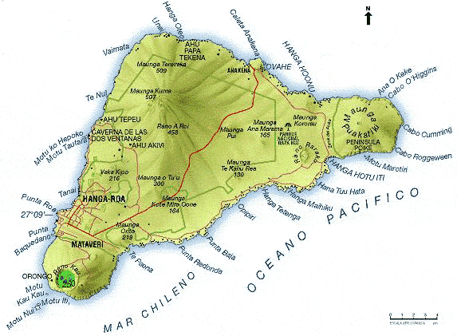

[Voir le carnet de route de l’île de Pâques]
Itinéraire prévisionnel :
 Tour de l’île
Tour de l’île
 les Moai
les Moai
 Hanga Roa
Hanga Roa

Ile volcanique chilienne du Pacifique à 4 000 km des côtes sud-américaines
Superficie : 165 km2
Population : 2 500 habitants
Localité principale : Hanga Roa
Population : 70% de polynésiens auxquels viennent s’ajouter des personnes originaires du Chili
Langues : Espagnol (off.), dialecte polynésien
Principales activités : en dehors de l’aide du continent et de l’élevage, le tourisme est sa principale source de revenus
Visa : non
Monnaie : Le Peso Chilien (1€ = 782 Pesos en 2004). US $ conseillés. Le taux de change sur l’île n’est pas toujours intéressant, donc autant changer sur le continent.
Budget quotidien : 36 à 48 US $/jour.
- Consulat du Chili : 64 bd Latour Maubourg, 75007 Paris. _ Tél. : 01 47 05 46 61. Ouvert de 8h30 à 13h30.
Ambassade de France :
| Adresse | Av. Condell, 65 Casilla 38-D. Providencia |
| Ville | Santiago |
| Téléphone | 56 2 4708000 |
| Fax | 56 2 4708010 |
| URL | http://www.france.cl |